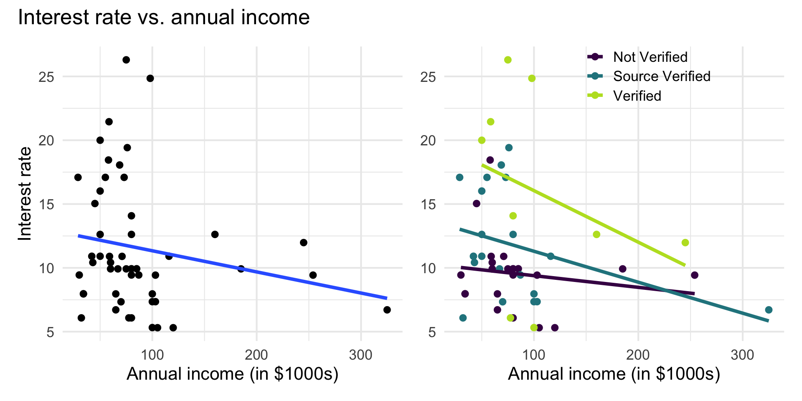

Multiple linear regression
Types of predictors cont’d
February 03, 2026
Announcements
Lab 03 due TODAY
One submission per team
Select every team member’s name in Gradescope
Statistics experience due April 2
SSMU Mini DataFest - February 8
Topics
- Interaction terms
Computing setup
#| context: setup
loan50 <- loan50 |>
mutate(
not_verified = factor(if_else(verified_income == "Not Verified", 1, 0)),
source_verified = factor(if_else(verified_income == "Source Verified", 1, 0)),
verified = factor(if_else(verified_income == "Verified", 1, 0)),
annual_income_th = annual_income / 1000) |>
filter(verified_income %in% c("Not Verified", "Source Verified", "Verified"))
# get rid of the hidden blank column of verified income
loan50$verified_income <- droplevels(loan50$verified_income)Data: Peer-to-peer lender
Today’s data is a sample of 50 loans made through a peer-to-peer lending club. The data is in the loan50 data frame in the openintro R package.
# A tibble: 50 × 4
annual_income_th debt_to_income verified_income interest_rate
<dbl> <dbl> <fct> <dbl>
1 59 0.558 Not Verified 10.9
2 60 1.31 Not Verified 9.92
3 75 1.06 Verified 26.3
4 75 0.574 Not Verified 9.92
5 254 0.238 Not Verified 9.43
6 67 1.08 Source Verified 9.92
7 28.8 0.0997 Source Verified 17.1
8 80 0.351 Not Verified 6.08
9 34 0.698 Not Verified 7.97
10 80 0.167 Source Verified 12.6
# ℹ 40 more rowsVariables
Predictors:
annual_income_th: Annual income (in $1000s)debt_to_income: Debt-to-income ratio, i.e. the percentage of a borrower’s total debt divided by their total incomeverified_income: Whether borrower’s income source and amount have been verified (Not Verified,Source Verified,Verified)
Response: interest_rate: Interest rate for the loan
Interaction terms
Interaction terms
- Sometimes the relationship between a predictor variable and the response depends on the value of another predictor variable.
- This is an interaction effect.
- To account for this, we can include interaction terms in the model.
Interest rate vs. annual income
The lines are not parallel indicating there is a potential interaction effect. The slope of annual income differs based on the income verification.

AE: Model with interaction effect
Model with interaction terms
| term | estimate | std.error | statistic | p.value |
|---|---|---|---|---|
| (Intercept) | 9.560 | 2.034 | 4.700 | 0.000 |
| debt_to_income | 0.691 | 0.685 | 1.009 | 0.319 |
| verified_incomeSource Verified | 3.577 | 2.539 | 1.409 | 0.166 |
| verified_incomeVerified | 9.923 | 3.654 | 2.716 | 0.009 |
| annual_income_th | -0.007 | 0.020 | -0.341 | 0.735 |
| verified_incomeSource Verified:annual_income_th | -0.016 | 0.026 | -0.643 | 0.523 |
| verified_incomeVerified:annual_income_th | -0.032 | 0.033 | -0.979 | 0.333 |
Model with interaction terms
Write the estimated regression equation for the people with
Not Verifiedincome.Write the estimated regression equation for people with
Verifiedincome.
Interpreting interaction terms
- What the interaction means: The effect of annual income on the interest rate differs by -0.016 when the income is source verified compared to when it is not verified, holding all else constant.
- Interpreting
annual_incomefor source verified: If the income is source verified, we expect the interest rate to decrease by 0.023% (-0.007 + -0.016) for each additional thousand dollars in annual income, holding all else constant.
Indicators and interactions
In general, how do
indicators for categorical predictors impact the model equation?
interaction terms impact the model equation?
Recap
- Interpreted interaction terms